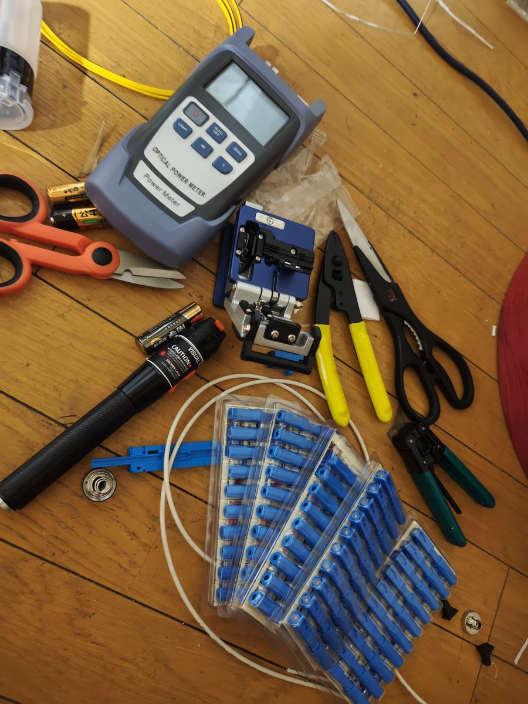
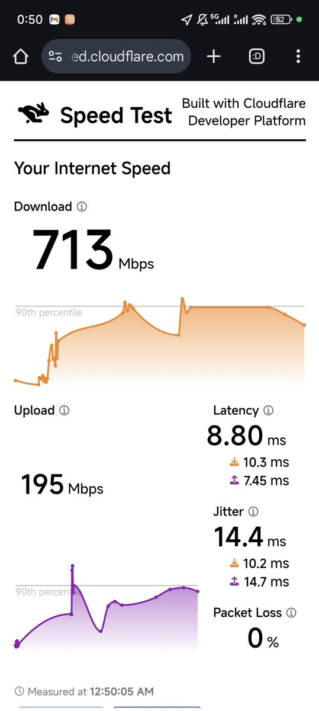

小虚空🍥
@tokerumaisurii
所以说发达国家养人锻炼人啊……


🍋 Hazymoon
@Ice_Hazymoon
光纤入户线断了，打电话问客服，上门检查七八千，修理 1w 日元左右，总得下来接个线需要 1000 人民币
这谁能忍，立马 PDD 179 包邮买了一套工具运到日本，折腾了两个小时，虽然光衰稍微大了几 db，但影响不大，感觉自己现在强得可怕。 https://t.co/fJOp3bYAis